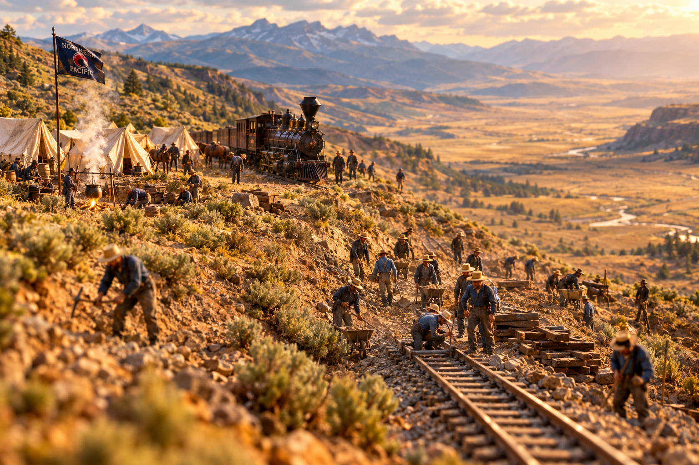

The Builders History Forgot: Chinese Workers of the Northern Pacific

There is a painting of the day the Northern Pacific was finished. You have likely seen it, or one like it. Frock coats and top hats, a brass band, bunting on the excursion cars, a gentleman with a maul raised over a spike while the grandstand hollers. Ex-President Grant is in there somewhere. So is half the money of two continents. What is not in there, in any version I have ever laid eyes on, is a single one of the men who actually built the thing.
That is a curious kind of arithmetic. By the best count historians can make, roughly two-thirds of the workforce on the Northern Pacific's western end was Chinese. Fifteen thousand of them, near enough, out of the twenty-five thousand hands the road needed in 1882 alone. They started the western push in 1878 and they did not stop until the rail ran out of continent. And on the twenty-second of August, 1883, near Independence Creek in Montana Territory, it was a Chinese crew working east that met an Irish and Slavic crew working west, and the two of them closed the last gap in the fifth transcontinental railroad in America.
Two and a half weeks later, the swells came out to Gold Creek and drove a golden spike into a tie for the photographers. That is the day the country decided to remember.
What the Work Actually Was
Understand what these men were doing out there. There were no machines to speak of. Grading was done with a pick, a shovel, a wheelbarrow, and a mule if you were fortunate in your foreman. Rock was moved by hand drill and black powder, which is a polite way of saying a man knelt at a hole in a cliff face and set a charge and then found out whether his arithmetic was any good. The Chinese crews bored tunnels, threw up retaining walls, cut benches into canyon sides above rivers that would not have given a body back, and laid track. Winters they went up with shovels and dug the drifts off the line, same as the crews at Rogers Pass would be doing a generation later, and for the same wages, which is to say not many.
For that they were paid roughly half to two-thirds of what a white man on the same grade took home, and they worked longer hours to earn it. Five thousand of them or thereabouts came over recruited straight from China by the labor contractors, the Six Companies out of San Francisco chief among them, who arranged the passage and the placement and took their cut coming and going.
They were valued the way a good tool is valued: steadily, quietly, and never once in the picture that gets framed.
The Camps
The camps were segregated, and that is not a small detail. It cut both ways. It meant the Chinese were kept apart from a workforce that a good many of them had reason to fear. It also meant that inside the camp a man could live something like his own life. Crews carried their own cooks and ate rice and dried vegetables and salt fish, hauled in over a supply network of Chinese growers and importers that grew up the length of the West to feed them. Many crews carried an herbalist, since the men had no use whatever for Western medicine, and here is a thing worth knowing: the Chinese habit of boiling water for tea kept dysentery out of their camps while it ran through the white ones. Sometimes the old way is the better way, and the reason only turns up eighty years later under a microscope.
Where the line met a town, a Chinatown grew beside the yard. Laundries, restaurants, stores selling what a man missed from home. And it was in those towns, not the camps, that the danger was worst. In Pasco and in Pendleton the residents dug tunnels under their own streets, partly to move goods and partly to move themselves out of sight of men who might do them harm. When one of their number died on the grade, the others washed him and buried him and wrote the family, and years on, crews would come back along the old right-of-way searching the ground for the bones of countrymen, to send them home for a proper burial. That is not a detail I would have invented. That is what the record says they did.
The Law That Closed the Door
In 1882, one year before the last rail went down, Congress passed the Chinese Exclusion Act. It barred Chinese laborers from entering the country and shut the door on citizenship for the ones already here. Consider the timing of that. The men grading the Northern Pacific's western division through the summer of 1882 were, by act of the United States Congress, building a railroad across a country that had just formally declared it did not want them.
The numbers tell it cold. In 1881, twelve thousand Chinese entered the United States. In 1887, ten did. Not ten thousand. Ten.
And the violence came behind the law, as it always does. Tacoma expelled its Chinese residents outright in 1885 and was admired for it. In February of 1886 a mob of some fifteen hundred went through Seattle rounding up every Chinese person they could lay hands on to put them on a boat, and it took federal troops to stop it. Out in Hells Canyon in 1887, at least thirty-one Chinese gold miners were murdered and no man was ever convicted of it, a tale I have told you before and would rather not tell again. A worker on the Northern Pacific in those years was choosing between going home poor and staying in a country where a crowd might come for him in the dark.
China Curve
Most of them went. With no hope left of ever bringing over a wife or a child, the men drifted back across the Pacific, and the Chinatowns along the line thinned and emptied until the only proof they had existed was a shape on an old fire-insurance map. The railroads turned to Japanese labor next, and paid them badly too, and in another twenty years the Selkirks would bury fifty-eight of them in a cut at Rogers Pass and not trouble to write down all their names either.
But ride the West with your eyes open and you will find them yet. China Curve. China Bend. China Hill. China Lake. Every one of those is a place where men from Guangdong swung a pick until the grade came right, and somebody who watched them do it named the spot after them, and the name stuck long after the country had agreed to forget the reason for it.
So the next time you see that painting of Gold Creek, with the top hats and the bunting and the golden spike, look hard at the empty ground behind the grandstand. That is where the railroad came from.
What Really Happened
Chinese laborers made up an estimated two-thirds of the workforce that built the Northern Pacific's western line, beginning in 1878. Estimates of the total employed range widely; BNSF, the NP's successor, estimates roughly 15,000 of the 25,000 workers needed in 1882 were Chinese immigrants, and some accounts put the cumulative figure above 20,000 across Washington, Idaho and Montana. About 5,000 were recruited directly from China through labor contractors including the Six Companies of San Francisco. They earned roughly one-half to two-thirds of white workers' wages for longer hours.
The transcontinental line was physically completed on August 22, 1883, near Independence Creek, Montana Territory, when a westward crew of mostly Irish and Slavic workers met an eastward-working Chinese crew. The ceremonial golden spike was driven at Gold Creek, Montana, on September 8, 1883.
The Chinese Exclusion Act passed in 1882, barring Chinese laborers from immigrating and denying naturalization to those already present. Chinese immigration fell from about 12,000 arrivals in 1881 to 10 in 1887. Tacoma expelled its Chinese population in 1885; a mob in Seattle attempted the same in February 1886 before federal intervention.
The lantern-keeper voice and frontier dialect above are storytelling. The figures, dates, wage ratios and events are drawn from the historical record; where sources disagree on worker totals, the range is noted rather than a single number asserted.
Sources & Further Reading
- Remembering the Chinese Forerunners Who Built the Northern Pacific, Rails to Trails Conservancy
- How Chinese Pioneers Helped Build the Pacific Northwest, Washington State University
- The Archeology of Chinese Laborers Who Connected the Country, National Park Service
- Northern Pacific Railroad Completion Site, 1883, Wikipedia
- Seattle riot of 1886, Wikipedia
- What Archaeologists Are Learning About the Chinese Immigrants Who Built the Transcontinental Railroad, Smithsonian